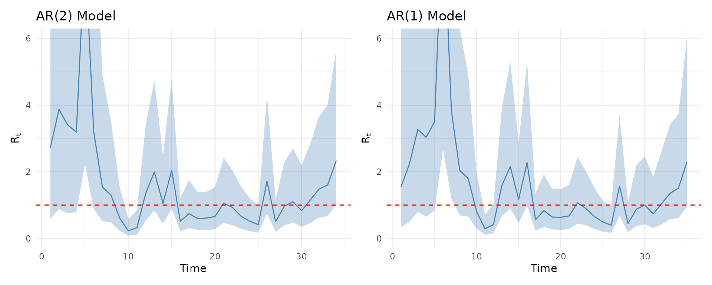
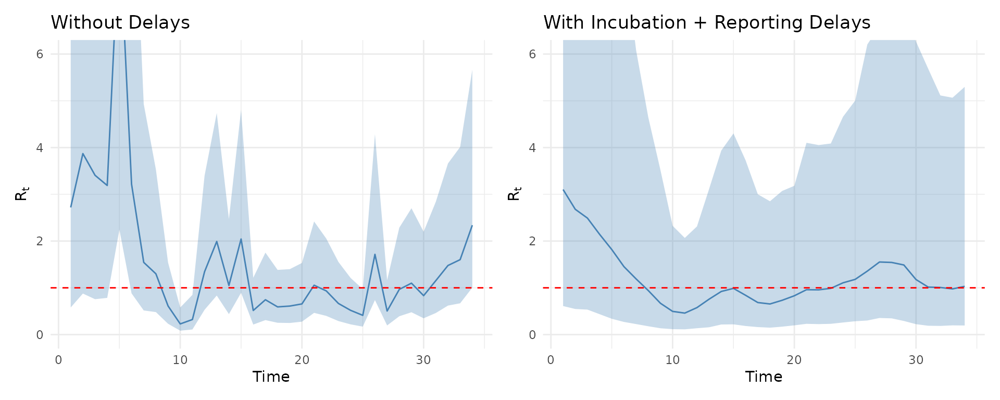

vignettes/mishra-case-study.Rmd
mishra-case-study.RmdThis vignette demonstrates how to replicate the analysis from Mishra et al. (2020) of COVID-19 transmission dynamics in South Korea using EpiAwareR. This case study showcases the compositional modelling approach by building a complete epidemiological model from three reusable components.
The analysis estimates the time-varying reproduction number () using:
We use the actual South Korea COVID-19 data from the preprint, which
is included in the package. The data comes from the
covidregionaldata R package and contains daily confirmed
cases from January to July 2020.
# Load South Korea COVID-19 data
data_path <- system.file("extdata", "south_korea_data.csv", package = "EpiAwareR")
south_korea <- read.csv(data_path)
south_korea$date <- as.Date(south_korea$date)
# Prepare full dataset - tspan will select the window
# Column must be named 'y_t' for EpiAware
full_data <- data.frame(
date = south_korea$date,
y_t = south_korea$cases_new
)
# Preview the training window (days 45-80)
# This corresponds to Feb 13 - Mar 19, 2020 (the main epidemic wave)
cat("Training window (tspan 45-80):\n")
#> Training window (tspan 45-80):
print(full_data[45:80, ])
#> date y_t
#> 45 2020-02-13 0
#> 46 2020-02-14 0
#> 47 2020-02-15 0
#> 48 2020-02-16 1
#> 49 2020-02-17 1
#> 50 2020-02-18 1
#> 51 2020-02-19 15
#> 52 2020-02-20 34
#> 53 2020-02-21 75
#> 54 2020-02-22 190
#> 55 2020-02-23 256
#> 56 2020-02-24 161
#> 57 2020-02-25 130
#> 58 2020-02-26 254
#> 59 2020-02-27 449
#> 60 2020-02-28 427
#> 61 2020-02-29 909
#> 62 2020-03-01 595
#> 63 2020-03-02 686
#> 64 2020-03-03 600
#> 65 2020-03-04 516
#> 66 2020-03-05 438
#> 67 2020-03-06 518
#> 68 2020-03-07 483
#> 69 2020-03-08 367
#> 70 2020-03-09 248
#> 71 2020-03-10 131
#> 72 2020-03-11 242
#> 73 2020-03-12 114
#> 74 2020-03-13 110
#> 75 2020-03-14 107
#> 76 2020-03-15 76
#> 77 2020-03-16 74
#> 78 2020-03-17 84
#> 79 2020-03-18 93
#> 80 2020-03-19 152
# Plot the training data
plot(full_data$date[45:80], full_data$y_t[45:80], type = "b",
xlab = "Date", ylab = "Daily Cases",
main = "South Korea COVID-19 Cases (Feb 13 - Mar 19, 2020)")The AR(2) process models the evolution of log over time with temporal autocorrelation:
where .
ar2 <- AR(
order = 2,
damp_priors = list(
truncnorm(0.1, 0.05, 0, 1), # ρ₁: Second-order coefficient
truncnorm(0.8, 0.05, 0, 1) # ρ₂: First-order (strong autocorrelation)
),
init_priors = list(
norm(-1.0, 0.1), # Initial value for lag 1
norm(-1.0, 0.5) # Initial value for lag 2
),
std_prior = halfnorm(0.5) # σ: Innovation standard deviation
)
#> Julia version 1.11.8 at location /opt/hostedtoolcache/julia/1.11.8/x64/bin will be used.
#> Loading setup script for JuliaCall...
#> Finish loading setup script for JuliaCall.
#> EpiAware Julia backend loaded successfully
print(ar2)
#> <EpiAware AR(2) Latent Model>
#> Damping priors: 2
#> Init priors: 2
#> Innovation std prior: specifiedPrior choices (from Mishra et al. 2020):
The renewal equation models new infections based on past infections and generation time:
where is the discretized generation time distribution.
renewal <- Renewal(
gen_distribution = gamma_dist(6.5, 0.62), # Shape and scale parameters
initialisation_prior = norm(log(1.0), 1.0) # Prior on initial log infections (wide)
)
print(renewal)
#> <EpiAware Renewal Infection Model>
#> Generation distribution: Gamma
#> Initialisation prior: specifiedKey parameters:
Links latent infections to observed case counts with overdispersion:
where controls overdispersion (clustering).
# The preprint fixes cluster_factor to 0.25
# We approximate this with a tight truncated normal prior
negbin <- NegativeBinomialError(
cluster_factor_prior = truncnorm(0.25, 0.01, 0, 1)
)
print(negbin)
#> <EpiAware Negative Binomial Observation Model>
#> Cluster factor prior: truncated(Normal(mean, sd), lower, upper)Parameterization:
model <- EpiProblem(
epi_model = renewal,
latent_model = ar2,
observation_model = negbin,
tspan = c(45, 80) # Exact tspan from preprint (Feb 13 - Mar 19, 2020)
)
print(model)
#> <EpiAware Epidemiological Model>
#> Time span: 45 to 80
#> Components:
#> - Infection model: epiaware_renewal
#> - Latent model: epiaware_ar
#> - Observation model: epiaware_negbinThe EpiProblem combines components into a joint Bayesian
model with automatic validation. The tspan = c(45, 80)
selects days 45-80 from the full dataset, matching the preprint
exactly.
We use NUTS (No-U-Turn Sampler) with Pathfinder initialization for posterior inference:
results <- fit(
model = model,
data = full_data, # Pass full dataset; tspan selects the window
method = nuts_sampler(
warmup = 1000, # Adaptation iterations
draws = 2000, # Posterior samples per chain (matches preprint)
chains = 4 # Independent chains for convergence assessment
)
)
#> Generating Turing.jl model...
#> Running NUTS sampling...
#> Chains: 4
#> Warmup: 1000
#> Draws: 2000
#> Running Pathfinder initialization...
#> Pathfinder initialization failed, using default initialization...
#> Processing results...Note: Fitting typically takes 2-5 minutes on modern hardware.
print(results)
#> <EpiAware Model Fit>
#>
#> Model:
#> Time span: 45 to 80
#> Infection model: epiaware_renewal
#> Latent model: epiaware_ar
#> Observation model: epiaware_negbin
#>
#> Sampling:
#> Method: NUTS
#> Chains: 4
#> Draws: 2000 (per chain)
#>
#> Convergence:
#> Max Rhat: 1.054
#> Min ESS (bulk): 71
#> Warning: Some parameters have ESS < 100
#>
#> Use summary() for parameter estimates
#> Use plot() to visualize resultsCheck for:
# Detailed posterior summaries
summary(results)
#> # A tibble: 53 × 10
#> variable mean median sd mad q5 q95 rhat ess_bulk ess_tail
#> <chr> <dbl> <dbl> <dbl> <dbl> <dbl> <dbl> <dbl> <dbl> <dbl>
#> 1 latent.… -0.994 -0.994 0.100 0.102 -1.16 -0.830 1.00 11528. 5107.
#> 2 latent.… -0.656 -0.648 0.469 0.473 -1.44 0.107 1.00 8623. 5223.
#> 3 latent.… 0.0839 0.0832 0.0397 0.0416 0.0200 0.152 1.00 5040. 3202.
#> 4 latent.… 0.809 0.808 0.0445 0.0442 0.736 0.881 1.00 3717. 1790.
#> 5 latent.… 0.556 0.548 0.0894 0.0874 0.424 0.713 1.00 4002. 4909.
#> 6 latent.… 0.982 0.990 0.892 0.880 -0.479 2.43 1.00 9452. 5536.
#> 7 latent.… 1.37 1.36 0.890 0.891 -0.0831 2.82 1.00 9555. 4553.
#> 8 latent.… 1.24 1.24 0.902 0.902 -0.248 2.75 1.00 11309. 6087.
#> 9 latent.… 1.18 1.17 0.893 0.882 -0.283 2.67 1.00 10868. 5106.
#> 10 latent.… 2.16 2.16 0.816 0.822 0.820 3.52 1.00 9389. 5849.
#> # ℹ 43 more rowsKey parameters to examine:
Test sensitivity to AR order:
# AR(1) alternative - strong autocorrelation like AR(2)
ar1 <- AR(
order = 1,
damp_priors = list(truncnorm(0.8, 0.05, 0, 1)), # High autocorrelation
init_priors = list(norm(-1.0, 0.5)),
std_prior = halfnorm(0.5)
)
model_ar1 <- EpiProblem(
epi_model = renewal,
latent_model = ar1,
observation_model = negbin,
tspan = c(45, 80)
)
results_ar1 <- fit(model_ar1, data = full_data)
#> Generating Turing.jl model...
#> Running NUTS sampling...
#> Chains: 4
#> Warmup: 1000
#> Draws: 1000
#> Running Pathfinder initialization...
#> Pathfinder initialization failed, using default initialization...
#> Processing results...Compare the estimates from both models:
library(ggplot2)
library(patchwork)
p_ar2 <- plot(results, type = "Rt") +
ggtitle("AR(2) Model") +
coord_cartesian(ylim = c(0, 6))
p_ar1 <- plot(results_ar1, type = "Rt") +
ggtitle("AR(1) Model") +
coord_cartesian(ylim = c(0, 6))
p_ar2 + p_ar1
The AR(2) model typically produces smoother trajectories due to the additional lag term, while AR(1) may show more rapid fluctuations.
Account for incubation and reporting delays:
# Incubation period (~5 days)
obs_incubation <- LatentDelay(
model = negbin,
delay_distribution = lognorm(1.6, 0.42)
)
# Reporting delay (~2 days)
obs_full <- LatentDelay(
model = obs_incubation,
delay_distribution = lognorm(0.58, 0.47)
)
model_delays <- EpiProblem(
epi_model = renewal,
latent_model = ar2,
observation_model = obs_full,
tspan = c(45, 80)
)
results_delays <- fit(model_delays, data = full_data)
#> Generating Turing.jl model...
#> Running NUTS sampling...
#> Chains: 4
#> Warmup: 1000
#> Draws: 1000
#> Running Pathfinder initialization...
#> Pathfinder initialization failed, using default initialization...
#> Processing results...Compare models with and without observation delays:
p_no_delay <- plot(results, type = "Rt") +
ggtitle("Without Delays") +
coord_cartesian(ylim = c(0, 6))
p_delay <- plot(results_delays, type = "Rt") +
ggtitle("With Incubation + Reporting Delays") +
coord_cartesian(ylim = c(0, 6))
p_no_delay + p_delay
Accounting for delays shifts the trajectory earlier in time, as infections precede observed cases.
The Mishra et al. (2020) analysis demonstrated:
Try modifying the analysis:
Mishra, S., Berah, T., Mellan, T. A., et al. (2020). On the derivation of the renewal equation from an age-dependent branching process: an epidemic modelling perspective. arXiv preprint arXiv:2006.16487.
sessionInfo()
#> R version 4.5.2 (2025-10-31)
#> Platform: x86_64-pc-linux-gnu
#> Running under: Ubuntu 24.04.3 LTS
#>
#> Matrix products: default
#> BLAS: /usr/lib/x86_64-linux-gnu/openblas-pthread/libblas.so.3
#> LAPACK: /usr/lib/x86_64-linux-gnu/openblas-pthread/libopenblasp-r0.3.26.so; LAPACK version 3.12.0
#>
#> locale:
#> [1] LC_CTYPE=C.UTF-8 LC_NUMERIC=C
#> [3] LC_TIME=C.UTF-8 LC_COLLATE=C.UTF-8
#> [5] LC_MONETARY=C.UTF-8 LC_MESSAGES=C.UTF-8
#> [7] LC_PAPER=C.UTF-8 LC_NAME=C.UTF-8
#> [9] LC_ADDRESS=C.UTF-8 LC_TELEPHONE=C.UTF-8
#> [11] LC_MEASUREMENT=C.UTF-8 LC_IDENTIFICATION=C.UTF-8
#>
#> time zone: UTC
#> tzcode source: system (glibc)
#>
#> attached base packages:
#> [1] stats graphics grDevices utils datasets methods base
#>
#> other attached packages:
#> [1] patchwork_1.3.2 ggplot2_4.0.1 EpiAwareR_0.1.0.9000
#>
#> loaded via a namespace (and not attached):
#> [1] tensorA_0.36.2.1 sass_0.4.10 utf8_1.2.6
#> [4] generics_0.1.4 stringi_1.8.7 digest_0.6.39
#> [7] magrittr_2.0.4 evaluate_1.0.5 grid_4.5.2
#> [10] RColorBrewer_1.1-3 fastmap_1.2.0 plyr_1.8.9
#> [13] jsonlite_2.0.0 backports_1.5.0 scales_1.4.0
#> [16] textshaping_1.0.4 jquerylib_0.1.4 abind_1.4-8
#> [19] cli_3.6.5 rlang_1.1.7 withr_3.0.2
#> [22] cachem_1.1.0 yaml_2.3.12 tools_4.5.2
#> [25] reshape2_1.4.5 checkmate_2.3.3 dplyr_1.1.4
#> [28] JuliaCall_0.17.6 vctrs_0.7.1 posterior_1.6.1
#> [31] R6_2.6.1 ggridges_0.5.7 matrixStats_1.5.0
#> [34] lifecycle_1.0.5 stringr_1.6.0 fs_1.6.6
#> [37] ragg_1.5.0 pkgconfig_2.0.3 desc_1.4.3
#> [40] pkgdown_2.2.0 pillar_1.11.1 bslib_0.9.0
#> [43] gtable_0.3.6 glue_1.8.0 Rcpp_1.1.1
#> [46] systemfonts_1.3.1 xfun_0.56 tibble_3.3.1
#> [49] tidyselect_1.2.1 knitr_1.51 farver_2.1.2
#> [52] bayesplot_1.15.0 htmltools_0.5.9 rmarkdown_2.30
#> [55] labeling_0.4.3 compiler_4.5.2 S7_0.2.1
#> [58] distributional_0.6.0